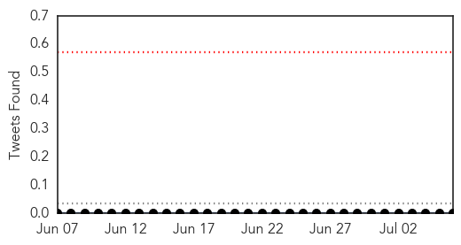

Unknown
30-Day Web Trend
2 alerts, 8 warnings

30-Day Twitter Trend
0 alerts, 2 warnings

Article Locations

Article Confidences

Top Articles:
- 0.997
- Foreigner tests positive for MERS in Manila
- 0.997
- Second MERS case confirmed in the Philippines
- 0.996
- Manila health officials confirm new MERS case
- 0.996
- Foreigner in Philippines tests positive for MERS virus
- 0.996
- Philippines' second case flew in from Middle East , SE Asia News & Top Stories
- 0.996
- Foreigner in Philippines tests positive for MERS virus
- 0.996
- Foreigner in Philippines tests positive for MERS virus
- 0.996
- Second #MERS case confirmed in the #Philippines
- 0.995
- Philippines confirms second MERS case
- 0.995
- Philippines confirms second MERS case
- 0.995
- Philippines visitor has deadly Mers virus
- 0.995
- Philippines isolates foreigner in second MERS case
- 0.995
- Philippines confirms second MERS case
- 0.995
- Foreigner in Philippines tests postive for MERS virus
- 0.995
- First South Korean MERS deaths in 8 days
- 0.995
- Philippines confirms Mers case in visitor from Dubai
- 0.995
- Philippines confirms second MERS case - Kuwait Times
- 0.995
- Foreigner in Philippines tests positive for MERS virus
- 0.994
- Philippines confirms second MERS case
- 0.994
- Philippines confirms second Mers case in foreigner who arrived from Dubai, SE Asia News & Top Stories
- 0.994
- Philippines confirms second MERS case
- 0.994
- Philippines confirms second MERS case
- 0.994
- Philippines confirms second MERS case
- 0.993
- Philippines confirms second MERS case, Others news, Health News, AsiaOne YourHealth
- 0.992
- Philippines confirms second MERS case in foreigner
- 0.991
- Philippines confirms second Mers case - Emirates 24
- 0.990
- Philippines confirms second MERS case in foreigner
- 0.990
- Philippines Confirms Second MERS Case — Naharnet
- 0.990
- DOH confirms second MERS case
- 0.989
- Philippines confirms second MERS case
- 0.989
- UPDATE – Philippines confirms second MERS case in foreigner
- 0.989
- Philippines confirms second case of MERS
- 0.987
- Philippines confirms second case of MERS
- 0.984
- Philippines confirms second MERS case
- 0.982
- Second confirmed case of MERS in the Philippines
- 0.981
- Palace: PH ‘fully ready, capable’ of combatting MERS
- 0.979
- MERS spurs calls for split of welfare, health roles-INSIDE Korea JoongAng Daily
- 0.974
- MERS Cases On Rise In South Korea
- 0.971
- Philippines confirms its second case of MERS
- 0.967
- Philippines confirms second MERS case
- 0.966
- Gov't, hospitals face class action suit over MERS
- 0.962
- Philippines confirms its second case of MERS
- 0.958
- Philippines confirms second Mers case
- 0.958
- Philippines confirms second MERS case
- 0.950
- Philippines confirms second MERS case
- 0.947
- Philippines records second case of MERS
- 0.932
- Philippines confirms second MERS case
- 0.917
- Vomiting bug from Asia spreading globally, threatens wave of gastrointestinal outbreaks, World News & Top Stories
- 0.917
- Chicago Tribune
- 0.917
- Chicago Tribune
Showing top 50 articles...
Top Tweets:
- 0.620
- Cette semaine, on suit l’histoire de la chère Aminata de Sierra Leone. Comme employé de Partners in… https://t.co/lHxB1BJLpE
Measles
30-Day Web Trend
2 alerts, 1 warnings

30-Day Twitter Trend
0 alerts, 0 warnings

Article Locations

Article Confidences

Top Articles:
- 0.974
- Health Officials Announce the First Measles Death in the US Since 2003
- 0.972
- The US just had its first measles death since 2003
- 0.963
- After Measles Death, More Scrutiny On Anti-Vaccine Sentiments
- 0.943
- Martha's Vineyard Measles Case Was Misidentified; Hospital to Review Protocols
- 0.925
- Martha's Vineyard measles diagnosis was incorrect, CDC said
- 0.857
- Q&A: Seth Mnookin on vaccination and public health
- 0.828
- Measles death in Washington state first in U.S. in a dozen years
- 0.783
- American woman who died of measles was previously vaccinated against measles... total failure of vaccine covered up by quack vaccine propagandists
- 0.741
- First US measles death in 12 years: How was it missed?
- 0.723
- California vaccine law is a healthy measure
- 0.698
- Washington woman's measles death is first in US since 2003
- 0.626
- Gov. Jerry Brown is a 'Corporate Fascist'
Top Tweets:
-
No tweets found for Jul 06, 2015